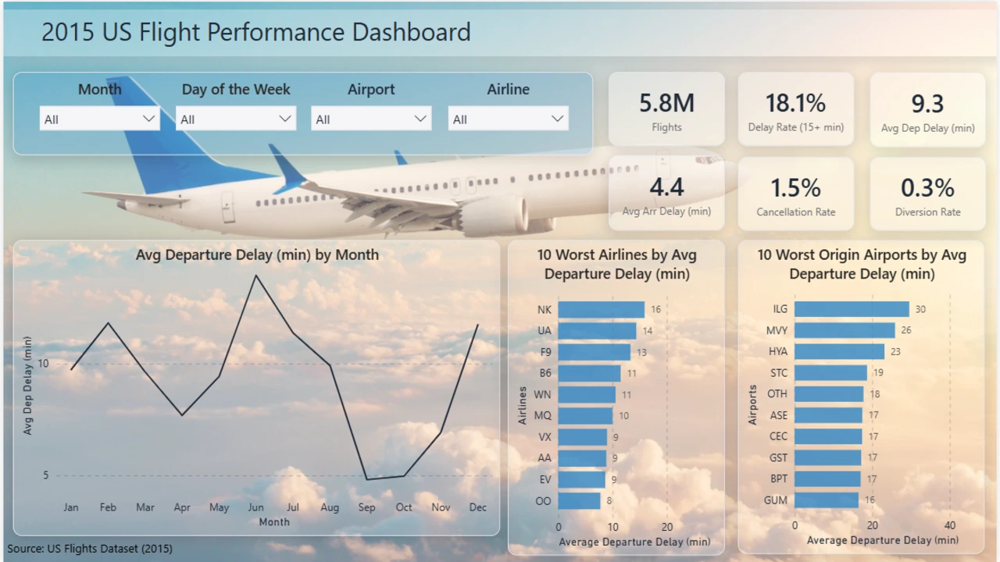
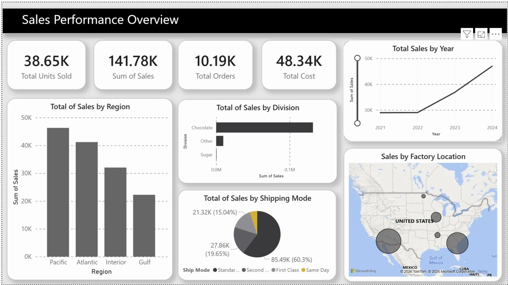
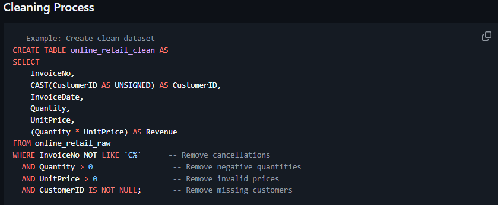

Power BI · Veiklos analizėIšskirtinis projektas
5,8 milijono skrydžių analizė
Keturių puslapių Power BI ataskaita apie JAV oro linijų, oro uostų ir maršrutų vėlavimo dėsningumus.
Apie projektąDonatas Paulauskas
Esu Donatas – verslo absolventas, jungiantis duomenis, žmones ir procesus. Kuriu ataskaitas ir automatizacijas, kurios palengvina kasdienį darbą.

Eindhovenas, Nyderlandai
01 / Atrinkti projektai
Analitikos, ataskaitų ir procesų automatizavimo projektai. Nuo konkrečios problemos iki veikiančio sprendimo.

Keturių puslapių Power BI ataskaita apie JAV oro linijų, oro uostų ir maršrutų vėlavimo dėsningumus.
Apie projektą
Aiškesnis pajamų augimo, produktų koncentracijos ir pelningumo vaizdas.

Pilnas SQL procesas: duomenų valymas, klientų segmentavimas ir kohortų išlaikymo analizė.

Susitikimų įrašų pavertimas transkripcijomis, santraukomis ir aiškiais tolesniais veiksmais.

Automatiniai priminimai ir tęstiniai laiškai, susieti su juos inicijuojančia informacija.

Klientų įrašų ir reguliarių ataskaitų sujungimas, supaprastinantis kasdienį CRM administravimą.

Daugiakalbis portfolio, jungiantis praktinius projektus, profesinę patirtį ir tiesioginį kontaktą.
02 / Kompetencijos
Jungiu verslo poreikių supratimą ir naudingų, prižiūrimų sprendimų kūrimą.
Power BI ataskaitos, paremtos reikalingais sprendimais, aiškiais rodikliais ir struktūruotu duomenų modeliu.
Duomenų valymas, jungimas ir tikrinimas, kad kiekviena diagrama ir verslo rodiklis turėtų patikimą pagrindą.
Formų, el. pašto, CRM ir kitų įrankių sujungimas, mažinantis pasikartojančias kasdienes užduotis.
Verslo poreikių pavertimas aiškiais pajamų, maržos, augimo ir veiklos efektyvumo rodiklių apibrėžimais.
Pardavimų, klientų elgsenos ir operacijų dėsningumų paieška, padedanti rasti prasmingus pokyčius.
Transkripcijų, struktūruotų santraukų ir naudingų rezultatų integravimas į aiškų tikslą turinčius procesus.
03 / Trumpai apie mane
Fontys aukštojoje mokykloje Eindhovene baigiau tarptautinį verslą. Rinkos tyrimų, rinkodaros ir operacijų patirtis išmokė pirmiausia suprasti verslo poreikį ir tik tada rinktis įrankį.
Šiandien kuriu karjerą analitikos ir automatizavimo srityse: dirbu su SQL, Power BI, Python ir Make.com. Man patinka painius procesus paversti aiškiais, pakartojamais ir naudingais sprendimais.
Patirtis ir išsilavinimas
Vilnius Coding School
Praktiniai SQL, Power BI, DAX ir Python mokymai.
Cosmicnode B.V. · Eindhoven
Rinkos ir konkurentų tyrimas, paverstas praktine plėtros strategija.
Flexi-Force B.V. · Barneveld
Kampanijų analizė, CRM procesai ir komercinės ataskaitos.
Fontys University of Applied Sciences
Make.com Advanced Badge · 2026
Google Digital Garage · 2021
Turite idėją?
Darbo pasiūlymas, projektas ar procesas, kurį galima patobulinti? Parašykite.
don.paulauskas@gmail.com